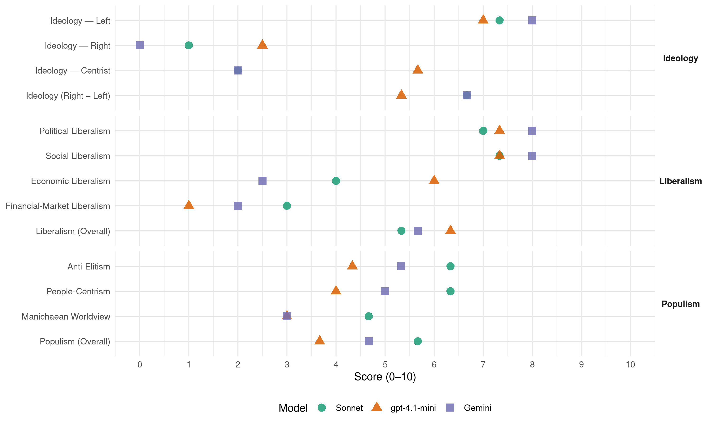

PCI (Italy, 1983)
manifesto_id 32220_198306
Get full text: This site shows derived annotations and short verbatim quotes only. The full manifesto text is © Manifesto Project / WZB — obtain it via manifesto-project.wzb.eu using the manifesto_id above.
Headline scores
| Dimension | Sonnet | gpt-4.1-mini | Gemini |
|---|---|---|---|
| Populism (Overall) | 5.7 | 3.7 | 4.7 |
| Anti-Elitism | 6.3 | 4.3 | 5.3 |
| People-Centrism | 6.3 | 4.0 | 5.0 |
| Manichaean Worldview | 4.7 | 3.0 | 3.0 |
| Ideology (Right − Left) | 6.7 | 5.3 | 6.7 |
| Liberalism (Overall) | 5.3 | 6.3 | 5.7 |
| Political Liberalism | 7.0 | 7.3 | 8.0 |
| Social Liberalism | 7.3 | 7.3 | 8.0 |
| Economic Liberalism | 4.0 | 6.0 | 2.5 |
| Financial-Market Liberalism | 3.0 | 1.0 | 2.0 |
Evidence per dimension
Economic Liberalism
Gemini · score 5.0 · mixed · chunk 1
“Il mercato dovrà svolgere comunque una funzione importante come misuratore di efficienza”
né statalismo, né pianificazione centralizzata. Il mercato dovrà svolgere comunque una funzione importante come misuratore di efficienza e come stimolo dell’imprenditorialità.
Gemini · score 3.0 · verified · chunk 2
“rigidi condizionamenti del mercato”
può nascere l’espressione di bisogni e tendenze qualitativamente nuovi, che i rigidi condizionamenti del mercato tendono ad occultare
Gemini · score 2.0 · verified · chunk 3
“rottura del meccanismi di sfruttamento dei popoli”
causa della libertà può avere fondamento senza una rottura del meccanismi di sfruttamento dei popoli oppressi e di saccheggio
gpt-4.1-mini · score 6.0 · verified · chunk 1
“una riforma della struttura del salario in rapporto soprattutto alla necessità di realizzare una maggiore corrispondenza fra la retribuzione e il costo del lavoro”
Nelle nostre proposte per un programma economico e sociale abbiamo posto l’esigenza di una riforma della struttura del salario in rapporto soprattutto alla necessità di realizzare una maggiore corrispondenza fra la retribuzione e il costo del lavoro, tra il salario e contenuti concreti dei lavoro (professionalità, produttività, fatica e responsabilità).
gpt-4.1-mini · score 6.0 · verified · chunk 2
“una nuova politica economica, la quale non può che scaturire dalle esigenze fondamentali dei vari strati di lavoratori”
Se questa difesa non vuole essere cieca, il movimento sindacale deve battersi per una nuova politica economica, la quale non può che scaturire dalle esigenze fondamentali dei vari strati di lavoratori che i sindacati rappresentano.
gpt-4.1-mini · score 6.0 · verified · chunk 3
“un nuovo ordine economico e politico internazionale”
la lotta per la pace si integra con quella per dare vita a un nuovo ordine economico e politico internazionale. Immensi drammi umani - carestie, denutrizione, morte per fame di milioni di persone, estinzione di interi gruppi etnici - sono il prezzo mostruoso della incapacità delle forze dominanti di costruire tra i popoli rapporti più equi, di usare delle risorse straordinarie offerte dalle conquiste scientifiche e tecniche per un comune progresso dell’umanità.
Sonnet · score 4.0 · verified · chunk 1
“Il mercato dovrà svolgere comunque una funzione”
Il mercato dovrà svolgere comunque una funzione importante come misuratore di efficienza e come stimolo dell’imprenditorialità. Ma il suo funzionamento deve essere inserito in un progetto
Sonnet · score 4.0 · verified · chunk 2
“programmazione democratica, di governo dell’economia”
un’ampia e diretta partecipazione dei cittadini e delle forze sociali alla formazione delle decisioni ed alla gestione e al controllo dei servizi sociali e delle funzioni pubbliche
Sonnet · score 4.0 · verified · chunk 3
“nuovo ordine economico mondiale”
la lotta per la pace e per un nuovo ordine economico mondiale. Ma questo obiettivo non basta proclamarlo
Financial-Market Liberalism
Gemini · score 3.0 · verified · chunk 1
“pubblica è la proprietà di parti fondamentali dell’industria e dei servizi e la quasi totalità del sistema bancario”
ove il confine tra l’area pubblica e quella privata è un confine mobile e ove pubblica è la proprietà di parti fondamentali dell’industria e dei servizi e la quasi totalità del sistema bancario, il problema
Gemini · score 1.0 · verified · chunk 3
“manovra dei flussi finanziari e monopolio”
rapporti di «scambio ineguale>>, manovra dei flussi finanziari e monopolio delle nuove tecnologie a scopo di dominio, ecc.
gpt-4.1-mini · score 1.0 · verified · chunk 3
“manovra dei flussi finanziari e monopolio delle nuove tecnologie a scopo di dominio”
Per combattere le nuove forme di imperialismo (penetrazione e affermazione in posizioni di comando di grandi imprese multinazionali, sfruttamento delle risorse dei paesi del Terzo mondo e impostazione di modelli di sviluppo subalterno, rapporti di «scambio ineguale>>, manovra dei flussi finanziari e monopolio delle nuove tecnologie a scopo di dominio, ecc.) occorre un vasto e molteplice movimento che per i suoi contenuti e le forze che lo compongono (non allineati, forze democratiche europee, e anche americane, ecc.) non può identificarsi in una scelta di campo e tanto meno in una delega alla politica di Stato dell’URSS.
Sonnet · score 3.0 · verified · chunk 1
“il capitale finanziario assorbe ormai una gran parte”
il capitale finanziario assorbe ormai una gran parte delle risorse delle imprese, e soprattutto che l’inflazione ostacola la programmazione di investimenti
Sonnet · score 3.0 · verified · chunk 2
“manovra dei flussi finanziari e monopolio”
manovra dei flussi finanziari e monopolio delle nuove tecnologie a scopo di dominio, ecc.) occorre un vasto e molteplice movimento
Political Liberalism
Gemini · score 8.0 · verified · chunk 1
“legame fra cittadini, partiti e istituzioni democratiche”
trasparente la dialettica politica, più produttivo il confronto fra le grandi correnti ideali del paese, e si rinsalda - in definitiva - il legame fra cittadini, partiti e istituzioni democratiche.
Gemini · score 8.0 · verified · chunk 2
“regole della democrazia”
si esprima più limpidamente attraverso un sistematico ricorso alle regole della democrazia.
Gemini · score 8.0 · verified · chunk 3
“vitalità della democrazia in molti paesi”
hanno già dimostrato i loro esiti non positivi per la vitalità della democrazia in molti paesi. Quei partiti che in Italia
gpt-4.1-mini · score 7.0 · verified · chunk 1
“la democrazia italiana ed ha contribuito più di ogni altro partito a fondare la Repubblica sul consenso attivo delle masse popolari”
Va respinta non solo perché discriminatoria e antidemocratica; non solo per il fatto che il PCI è parte essenziale della democrazia italiana ed ha contribuito più di ogni altro partito a fondare la Repubblica sul consenso attivo delle masse popolari; ma perché, in realtà, questa tesi va rovesciata.
gpt-4.1-mini · score 8.0 · verified · chunk 2
“la democrazia Italiana ha dovuto reggere alle prove drammatiche di un attacco mirante a rompere la legalità democratica”
È questo il significato della fermezza dei comunisti di fronte al terrorismo: essa è stata decisiva nel corso di questi anni in cui la democrazia Italiana ha dovuto reggere alle prove drammatiche di un attacco mirante a rompere la legalità democratica. I successi - importanti seppure non definitivi - raggiunti nella lotta contro il terrorismo non debbono far dimenticare che permane acuta la crisi della legalità democratica, come è provato anche dal fatto che si sono aggravate enormemente in alcune zone del paese le manifestazioni di violenza, mafiosa e dl criminalità organizzata.
gpt-4.1-mini · score 7.0 · verified · chunk 3
“la Costituzione stessa ha sancito: di strumenti di organizzazione della democrazia”
Occorre reagire riaffermando il carattere e la funzione che i partiti debbono avere nel nostro sistema democratico e che la Costituzione stessa ha sancito: di strumenti di organizzazione della democrazia e della partecipazione dei cittadini alla definizione degli indirizzi della politica nazionale, di tramiti permanenti e attivi tra la società e le istituzioni.
Sonnet · score 7.0 · verified · chunk 1
“trasformare il paese in un senso pienamente democratico”
avviare il superamento della crisi e trasformare il paese in un senso pienamente democratico, moderno, efficiente, più giusto e più libero
Sonnet · score 7.0 · verified · chunk 2
“democrazia politica, che naturalmente è perseguibile”
La democrazia politica, che naturalmente è perseguibile ed attuabile in forme istituzionali diverse, è per noi un valore universale
Sonnet · score 7.0 · verified · chunk 3
“strumenti di organizzazione della democrazia”
i partiti debbono avere nel nostro sistema democratico e che la Costituzione stessa ha sancito: di strumenti di organizzazione della democrazia e della partecipazione dei cittadini
Liberalism (Overall)
Gemini · score 6.0 · verified · chunk 1
“legame fra cittadini, partiti e istituzioni democratiche”
trasparente la dialettica politica, più produttivo il confronto fra le grandi correnti ideali del paese, e si rinsalda - in definitiva - il legame fra cittadini, partiti e istituzioni democratiche.
Gemini · score 6.0 · verified · chunk 2
“regole della democrazia”
si esprima più limpidamente attraverso un sistematico ricorso alle regole della democrazia.
Gemini · score 5.0 · verified · chunk 3
“vitalità della democrazia in molti paesi”
hanno già dimostrato i loro esiti non positivi per la vitalità della democrazia in molti paesi. Quei partiti che in Italia
gpt-4.1-mini · score 7.0 · verified · chunk 1
“il PCI è parte essenziale della democrazia italiana ed ha contribuito più di ogni altro partito a fondare la Repubblica”
Va respinta non solo perché discriminatoria e antidemocratica; non solo per il fatto che il PCI è parte essenziale della democrazia italiana ed ha contribuito più di ogni altro partito a fondare la Repubblica sul consenso attivo delle masse popolari; ma perché, in realtà, questa tesi va rovesciata.
gpt-4.1-mini · score 7.0 · verified · chunk 2
“la democrazia Italiana ha dovuto reggere alle prove drammatiche di un attacco mirante a rompere la legalità democratica”
È questo il significato della fermezza dei comunisti di fronte al terrorismo: essa è stata decisiva nel corso di questi anni in cui la democrazia Italiana ha dovuto reggere alle prove drammatiche di un attacco mirante a rompere la legalità democratica. I successi - importanti seppure non definitivi - raggiunti nella lotta contro il terrorismo non debbono far dimenticare che permane acuta la crisi della legalità democratica, come è provato anche dal fatto che si sono aggravate enormemente in alcune zone del paese le manifestazioni di violenza, mafiosa e dl criminalità organizzata.
gpt-4.1-mini · score 5.0 · verified · chunk 3
“la Costituzione stessa ha sancito: di strumenti di organizzazione della democrazia”
Occorre reagire riaffermando il carattere e la funzione che i partiti debbono avere nel nostro sistema democratico e che la Costituzione stessa ha sancito: di strumenti di organizzazione della democrazia e della partecipazione dei cittadini alla definizione degli indirizzi della politica nazionale, di tramiti permanenti e attivi tra la società e le istituzioni.
Sonnet · score 5.0 · verified · chunk 1
“programmazione democratica; né statalismo, né pianificazione centralizzata”
questa è per noi la programmazione democratica; né statalismo, né pianificazione centralizzata. Una tale programmazione è l’unica strada
Sonnet · score 5.0 · verified · chunk 2
“valore universale. La lotta di emancipazione”
La democrazia politica… è per noi un valore universale. La lotta di emancipazione non solo non può essere in contraddizione con le garanzie democratiche
Sonnet · score 6.0 · verified · chunk 3
“piena autonomia dei movimenti per la pace”
implica l’esigenza di sostenere e difendere la piena autonomia dei movimenti per la pace rispetto ad ogni tentativo egemonico
Anti-Elitism
Gemini · score 7.0 · verified · chunk 1
“l’impotenza e la crisi del partiti che fondano la loro forza sull’occupazione dello Stato”
È la natura stessa dei problemi di oggi, è l’impotenza e la crisi del partiti che fondano la loro forza sull’occupazione dello Stato, è il fatto che tra crisi economica
Gemini · score 6.0 · verified · chunk 2
“liberato dalle pratiche spartitori fra i partiti”
perché esso possa crescere e dispiegare tutte le sue potenzialità di fattore di democrazia e di eguaglianza, è indispensabile che venga liberato dalle pratiche spartitori fra i partiti di governo che tendono a utilizzarlo come strumento di consenso per i ceti dominanti.
Gemini · score 3.0 · verified · chunk 3
“occupazione del potere, hanno pagato il prezzo”
Quei partiti che in Italia hanno concepito il loro ruolo essenzialmente come occupazione del potere, hanno pagato il prezzo di una perdita di capacità propositiva
gpt-4.1-mini · score 7.0 · verified · chunk 1
“il ristagno delle forze produttive con l’estendersi dell’area della speculazione e del parassitismo”
Il rischio attuale è che le spinte involutive, già in atto, tendano sempre più a sommarsi tra loro: il ristagno delle forze produttive con l’estendersi dell’area della speculazione e del parassitismo, la disoccupazione con una paurosa crisi finanziaria, la lottizzazione dello Stato con il diffondersi dei poteri occulti e della mafia, l’aggravarsi della questione meridionale e di tutte le ingiustizie e gli squilibri, con una tendenza al distacco dei cittadini dalle istituzioni democratiche.
gpt-4.1-mini · score 3.0 · verified · chunk 2
“tentativi di coinvolgere il movimento sindacale nel suo complesso nelle logiche delle maggioranze parlamentari e dei governi”
Da anni ormai si vanno ripetendo i tentativi di coinvolgere il movimento sindacale nel suo complesso nelle logiche delle maggioranze parlamentari e dei governi: e questo ha lasciato segni profondi tra le masse operaie e lavoratrici dove sono presenti e vive profonde differenziazioni politiche e ideali, alimentate anche dalle contraddizioni provocate dalla crisi.
gpt-4.1-mini · score 3.0 · verified · chunk 3
“le forze dominanti di costruire tra i popoli rapporti più equi”
Immensi drammi umani - carestie, denutrizione, morte per fame di milioni di persone, estinzione di interi gruppi etnici - sono il prezzo mostruoso della incapacità delle forze dominanti di costruire tra i popoli rapporti più equi, di usare delle risorse straordinarie offerte dalle conquiste scientifiche e tecniche per un comune progresso dell’umanità.
Sonnet · score 7.0 · verified · chunk 1
“concentrare in sedi ristrette e incontrollate poteri”
emerge una tendenza a concentrare in sedi ristrette e incontrollate poteri che sono essenziali per la vita della gente
Sonnet · score 7.0 · verified · chunk 2
“potere finanziario, il complesso militare-industriale, i centri occulti”
vecchie e nuove potenze dominanti (il potere finanziario, il complesso militare-industriale, i centri occulti di decisione, i potentati corporativi ecc.)
Sonnet · score 5.0 · verified · chunk 3
“sfruttamento delle risorse dei paesi del Terzo mondo”
nuove forme di imperialismo (penetrazione e affermazione in posizioni di comando di grandi imprese multinazionali, sfruttamento delle risorse dei paesi del Terzo mondo e impostazione di modelli di sviluppo subalterno
Ideology — Centrist
Gemini · score 2.0 · verified · chunk 2
“rappresentativa del paese reale”
assicurare a tutti i cittadini il diritto a una informazione correttane pluralistica, rappresentativa del paese reale; porre a disposizione della collettività i dati
gpt-4.1-mini · score 6.0 · verified · chunk 1
“una politica di alternativa democratica alla DC e al suo sistema di potere”
È necessario dare all’Italia un governo nuovo, un governo di alternativa democratica alla DC e al suo sistema di potere, imperniato sui partiti della sinistra e forte degli apporti e dei contributi di altre correnti democratiche.
gpt-4.1-mini · score 5.0 · verified · chunk 2
“la dialettica fra le diverse posizioni - che investono, in alcuni casi, questioni rilevanti ed esprimono visioni differenti delle funzioni e dei connotati del sindacato”
L’obiettivo dell’unità sindacale va perseguito con tenacia: ma per avanzare in questa direzione bisogna fare in modo che la dialettica fra le diverse posizioni - che investono, in alcuni casi, questioni rilevanti ed esprimono visioni differenti delle funzioni e dei connotati del sindacato - si esprima più limpidamente attraverso un sistematico ricorso alle regole della democrazia.
gpt-4.1-mini · score 6.0 · verified · chunk 3
“ricerca rinnovatrice è andata avanti in seno alle diverse componenti della sinistra europea”
Eppure la prospettiva di un processo di ricomposizione del movimento operaio dell’Europa occidentale si è in questi ultimi anni riaperta: non nel senso che si profili la possibilità concreta di fusioni organizzative tra partiti socialisti e comunisti, ma nel senso che una ricerca rinnovatrice è andata avanti in seno alle diverse componenti della sinistra europea, determinando convergenze e divergenze non riconducibili agli schemi del passato.
Sonnet · score 2.0 · verified · chunk 1
“alternativa democratica non deve caratterizzarsi”
l’alternativa democratica non deve caratterizzarsi come un’alternativa laicista, cioè come la contrapposizione di uno schieramento laico
Sonnet · score 2.0 · verified · chunk 2
“non solo le minoranze ma l’insieme degli eletti”
il luogo in cui non solo le minoranze ma l’insieme degli eletti possono controllare e pesare sulle decisioni
Sonnet · score 2.0 · verified · chunk 3
“non può identificarsi in una scelta di campo”
non può identificarsi in una scelta di campo e tanto meno in una delega alla politica di Stato dell’URSS
Ideology — Left
Gemini · score 8.0 · verified · chunk 1
“il problema di un superamento del sistema capitalistico diventa attuale”
siamo giunti a quello stadio dello sviluppo storico in cui il problema di un superamento del sistema capitalistico diventa attuale, anche per la necessità oggettiva
Gemini · score 8.0 · verified · chunk 2
“difesa solidale degli interessi e dei diritti dei lavoratori”
Il movimento sindacale ha una sua funzione specifica: la difesa solidale degli interessi e dei diritti dei lavoratori, sia nell’attività produttiva che nella società civile.
Gemini · score 8.0 · verified · chunk 3
“nell’interesse delle classi lavoratrici e del destino”
Ma il compito che ci impegna più direttamente, nell’interesse delle classi lavoratrici e del destino del nostro continente, è la ricomposizione del movimento operaio
gpt-4.1-mini · score 8.0 · verified · chunk 1
“una politica recessivà e al tempo stesso inflazionistica, di ulteriore corporativizzazione della società, di attacco alle conquiste sociali”
Il danno più grande è che in questa situazione sta passando una politica recessivà e al tempo stesso inflazionistica, di ulteriore corporativizzazione della società, di attacco alle conquiste sociali e culturali degli ultimi decenni.
gpt-4.1-mini · score 6.0 · verified · chunk 2
“la difesa solidale degli interessi e dei diritti dei lavoratori”
Il movimento sindacale ha una sua funzione specifica: la difesa solidale degli interessi e dei diritti dei lavoratori, sia nell’attività produttiva che nella società civile. Se questa difesa non vuole essere cieca, il movimento sindacale deve battersi per una nuova politica economica, la quale non può che scaturire dalle esigenze fondamentali dei vari strati di lavoratori che i sindacati rappresentano.
gpt-4.1-mini · score 7.0 · verified · chunk 3
“lotta per la pace si integra con quella per dare vita a un nuovo ordine economico”
I comunisti italiani, che lottano per la pace con tutte le proprie energie, con il contributo delle loro Idee e iniziative, intendono promuovere i contatti più larghi con tutte le forze impegnate per la pace e il disarmo, non soltanto in Italia, ma anche su scala europea e internazionale. Essi portano in questo movimento la loro profonda convinzione che la lotta per la pace si integra con quella per dare vita a un nuovo ordine economico e politico internazionale.
Sonnet · score 8.0 · verified · chunk 1
“superamento del sistema capitalistico diventa attuale”
siamo giunti a quello stadio dello sviluppo storico in cui il problema di un superamento del sistema capitalistico diventa attuale
Sonnet · score 7.0 · verified · chunk 2
“lotta per il socialismo non va avanti”
la lotta per il socialismo non va avanti se non si traduce in una sempre più compiuta affermazione di democrazia
Sonnet · score 7.0 · verified · chunk 3
“classi lavoratrici dell’Occidente”
L’avanzata delle classi lavoratrici dell’Occidente e la stessa salvaguardia della funzione civile dell’Europa fa ormai tutt’uno con la soluzione del grande dramma del sottosviluppo
Ideology (Right − Left)
Gemini · score 8.0 · verified · chunk 1
“il problema di un superamento del sistema capitalistico diventa attuale”
siamo giunti a quello stadio dello sviluppo storico in cui il problema di un superamento del sistema capitalistico diventa attuale, anche per la necessità oggettiva
Gemini · score 7.0 · verified · chunk 2
“difesa solidale degli interessi e dei diritti dei lavoratori”
Il movimento sindacale ha una sua funzione specifica: la difesa solidale degli interessi e dei diritti dei lavoratori, sia nell’attività produttiva che nella società civile.
Gemini · score 5.0 · verified · chunk 3
“nell’interesse delle classi lavoratrici e del destino”
Ma il compito che ci impegna più direttamente, nell’interesse delle classi lavoratrici e del destino del nostro continente, è la ricomposizione del movimento operaio
gpt-4.1-mini · score 6.0 · verified · chunk 1
“una politica di alternativa democratica alla DC e al suo sistema di potere”
È necessario dare all’Italia un governo nuovo, un governo di alternativa democratica alla DC e al suo sistema di potere, imperniato sui partiti della sinistra e forte degli apporti e dei contributi di altre correnti democratiche.
gpt-4.1-mini · score 5.0 · verified · chunk 2
“tentativi di coinvolgere il movimento sindacale nel suo complesso nelle logiche delle maggioranze parlamentari e dei governi”
Da anni ormai si vanno ripetendo i tentativi di coinvolgere il movimento sindacale nel suo complesso nelle logiche delle maggioranze parlamentari e dei governi: e questo ha lasciato segni profondi tra le masse operaie e lavoratrici dove sono presenti e vive profonde differenziazioni politiche e ideali, alimentate anche dalle contraddizioni provocate dalla crisi.
gpt-4.1-mini · score 5.0 · verified · chunk 3
“ricerca rinnovatrice è andata avanti in seno alle diverse componenti della sinistra europea”
Eppure la prospettiva di un processo di ricomposizione del movimento operaio dell’Europa occidentale si è in questi ultimi anni riaperta: non nel senso che si profili la possibilità concreta di fusioni organizzative tra partiti socialisti e comunisti, ma nel senso che una ricerca rinnovatrice è andata avanti in seno alle diverse componenti della sinistra europea, determinando convergenze e divergenze non riconducibili agli schemi del passato.
Sonnet · score 7.0 · verified · chunk 1
“processo di liberazione della società”
Il problema del socialismo, inteso come processo di liberazione della società e dei singoli, si ripresenta come un bisogno storico
Sonnet · score 7.0 · verified · chunk 2
“trasformazione in senso socialista dello Stato”
il modo in cui noi comunisti italiani concepiamo la trasformazione in senso socialista dello Stato, dell’economia e della società
Sonnet · score 6.0 · verified · chunk 3
“partito dei lavoratori e del popolo”
il PCI può e deve affermarsi sempre più come grande, moderno partito dei lavoratori e del popolo, come forza essenziale del rinnovamento
Ideology — Right
Gemini · score 0.0 · verified · chunk 2
“contro ogni forma di razzismo”
E al tempo stesso ci battiamo per i diritti delle minoranze, contro ogni forma di razzismo, ogni strumentalizzazione di diversità sociali
gpt-4.1-mini · score 3.0 · verified · chunk 1
“la politica degli Stati Uniti tende a colpire il peso economico e il ruolo politico dell’Europa, fino a subordinarla”
I processi di ristrutturazione dell’economia e del potere su scala mondiale stanno già portando a mutamenti significativi nelle gerarchie internazionali. La politica degli Stati Uniti tende a colpire il peso economico e il ruolo politico dell’Europa, fino a subordinarla.
gpt-4.1-mini · score 2.0 · verified · chunk 2
“la mafia e la camorra sono venute costituendosi come veri e propri poteri criminali paralleli”
La P2 ha fornito la prova del livello cui ha potuto giungere una centrale clandestina di potere. La mafia e la camorra sono venute costituendosi come veri e propri poteri criminali paralleli in grado di dominare zone rilevanti del paese e aspetti della, vita produttiva e sociale.
Sonnet · score 1.0 · verified · chunk 1
“lotte per la emancipazione dei popoli”
operando per la coesistenza e la cooperazione tra i Paesi con regimi sociali diversi, per il disarmo, per il sollevamento delle aree economicamente arretrate, per combattere sul solido terreno della pace le lotte per la emancipazione dei popoli
Sonnet · score 1.0 · verified · chunk 2
“contro ogni forma di razzismo”
ci battiamo per i diritti delle minoranze, contro ogni forma di razzismo, ogni strumentalizzazione di diversità sociali
Sonnet · score 1.0 · verified · chunk 3
“l’indipendenza nazionale, l’emancipazione”
lotte di tutti i popoli e movimenti di liberazione che nel mondo si battono per l’autodeterminazione, l’indipendenza nazionale, l’emancipazione e il progresso sociale
Manichaean Worldview
Gemini · score 5.0 · verified · chunk 1
“liberare la politica e la società dai condizionamenti negativi e corruttori”
prospettiva dell’alternativa democratica - proprio perché si propone di liberare la politica e la società dai condizionamenti negativi e corruttori dell’attuale sistema di potere
Gemini · score 3.0 · verified · chunk 2
“nemici della democrazia”
Quanto maggiore è la certezza della libertà, del diritto, della giustizia sociale, tanto più è possibile lottare con risolutezza contro i nemici della democrazia.
Gemini · score 1.0 · verified · chunk 3
“meccanismi di sfruttamento dei popoli oppressi”
senza una rottura del meccanismi di sfruttamento dei popoli oppressi e di saccheggio delle risorse di interi continenti.
gpt-4.1-mini · score 5.0 · verified · chunk 1
“lotta contro la mafia e contro gli inquinamenti nella vita delle istituzioni”
E i fatti sono l’acutezza dello scontro sociale, lo stato del rapporti tra i partiti e lo Stato, i pericoli per la democrazia, la lotta contro la mafia e contro gli inquinamenti nella vita delle istituzioni e del partiti governativi.
gpt-4.1-mini · score 2.0 · verified · chunk 2
“la P2 ha fornito la prova del livello cui ha potuto giungere una centrale clandestina di potere”
Emergono nella vita pubblica elementi degenerativi sempre più preoccupanti. La P2 ha fornito la prova del livello cui ha potuto giungere una centrale clandestina di potere. La mafia e la camorra sono venute costituendosi come veri e propri poteri criminali paralleli in grado di dominare zone rilevanti del paese e aspetti della, vita produttiva e sociale.
gpt-4.1-mini · score 2.0 · verified · chunk 3
“contro ogni forma di razzismo, ogni strumentalizzazione di diversità sociali”
E al tempo stesso ci battiamo per i diritti delle minoranze, contro ogni forma di razzismo, ogni strumentalizzazione di diversità sociali, religiose, filosofiche per dividere i popoli e i lavoratori.
Sonnet · score 5.0 · verified · chunk 1
“la battaglia contro l’offensiva della destra”
le lotte sociali e politiche; ma la battaglia contro l’offensiva della destra può essere vinta solo a condizione che le sinistre sappiano
Sonnet · score 5.0 · verified · chunk 2
“degenerazione profonda anche dei meccanismi istituzionali”
la discriminazione contro i comunisti, impedendo ogni ricambio, ha portato ad una degenerazione profonda anche dei meccanismi istituzionali e dello Stato
Sonnet · score 4.0 · verified · chunk 3
“meccanismi di sfruttamento dei popoli oppressi”
senza una rottura del meccanismi di sfruttamento dei popoli oppressi e di saccheggio delle risorse di interi continenti
People-Centrism
Gemini · score 6.0 · verified · chunk 1
“fondare la Repubblica sul consenso attivo delle masse popolari”
parte essenziale della democrazia italiana ed ha contribuito più di ogni altro partito a fondare la Repubblica sul consenso attivo delle masse popolari; ma perché, in realtà
Gemini · score 5.0 · verified · chunk 2
“rappresentativa del paese reale”
assicurare a tutti i cittadini il diritto a una informazione correttane pluralistica, rappresentativa del paese reale; porre a disposizione della collettività i dati
Gemini · score 4.0 · verified · chunk 3
“partecipazione delle masse alla politica per trasformare”
partito che organizza la partecipazione delle masse alla politica per trasformare la società e lo Stato nella direzione del socialismo
gpt-4.1-mini · score 6.0 · verified · chunk 1
“la partecipazione popolare che - se si vuole ciò - devono partecipare al governo del Paese”
Diventa sempre più chiaro che nessun problema può essere risolto (nell’economia, nelle istituzioni, nella cultura, nella convivenza civile) senza una profonda svolta che abbia il segno dell’equità e del rigore, e quindi senza un impegno consapevole delle forze produttive e delle masse lavoratrici e popolari che - se si vuole ciò - devono partecipare al governo del Paese.
gpt-4.1-mini · score 4.0 · verified · chunk 2
“la partecipazione dei cittadini; la garanzia per gli operatori, che professionalità e competenza facciano premio sull’appartenenza a partiti e a correnti”
Il controllo democratico va sviluppato integrando le funzioni esercitate dal Parlamento con l’iniziativa di un’ampia rete di movimenti e associazioni di base. La partecipazione in tal modo si arricchisce di forme nuove. Essa diviene sia stimolo, proposta, controllo, nel confronti degli organismi rappresentativi che mantengono la responsabilità delle scelte e della loro attuazione; sia gestione mista, anche attraverso lo strumento della convenzione tra pubblici poteri e forme associative e di volontariato; sia autogestione diretta nell’ambito delle scelte pubbliche di programmazione.
gpt-4.1-mini · score 2.0 · verified · chunk 3
“la partecipazione a movimenti e iniziative politiche di massa”
Ognuno di questi temi implica per i comunisti, oltre all’impegno nelle istituzioni democratiche, l’organizzazione e la partecipazione a movimenti e iniziative politiche di massa. Il collegamento di massa comporta anche una più alta capacità delle organizzazioni e dei militanti comunisti di intervenire e di incidere nella rete di apparati, di strutture pubbliche e sociali in cui si esprimono e pesano oggi le competenze specifiche, e si gestiscono e si attuano in concreto tante decisioni pubbliche.
Sonnet · score 7.0 · verified · chunk 1
“mobilitazione e partecipazione popolare”
governare il paese senza una grande mobilitazione e partecipazione popolare; è la necessità di promuovere nuove soluzioni produttive
Sonnet · score 6.0 · verified · chunk 2
“consenso popolare e insieme maggiore capacità”
allo Stato italiano occorre maggiore consenso popolare e insieme maggiore capacità di decisione e di funzionalità
Sonnet · score 6.0 · verified · chunk 3
“le grandi masse popolari”
la politica non può che essere intesa come impegno, partecipazione, intervento, controllo da parte delle grandi masse popolari
Populism (Overall)
Gemini · score 6.0 · verified · chunk 1
“liberare la politica e la società dai condizionamenti negativi e corruttori”
prospettiva dell’alternativa democratica - proprio perché si propone di liberare la politica e la società dai condizionamenti negativi e corruttori dell’attuale sistema di potere
Gemini · score 5.0 · verified · chunk 2
“liberato dalle pratiche spartitori fra i partiti”
perché esso possa crescere e dispiegare tutte le sue potenzialità di fattore di democrazia e di eguaglianza, è indispensabile che venga liberato dalle pratiche spartitori fra i partiti di governo che tendono a utilizzarlo come strumento di consenso per i ceti dominanti.
Gemini · score 3.0 · verified · chunk 3
“partecipazione delle masse alla politica per trasformare”
partito che organizza la partecipazione delle masse alla politica per trasformare la società e lo Stato nella direzione del socialismo
gpt-4.1-mini · score 6.0 · verified · chunk 1
“il ristagno delle forze produttive con l’estendersi dell’area della speculazione e del parassitismo”
Il rischio attuale è che le spinte involutive, già in atto, tendano sempre più a sommarsi tra loro: il ristagno delle forze produttive con l’estendersi dell’area della speculazione e del parassitismo, la disoccupazione con una paurosa crisi finanziaria, la lottizzazione dello Stato con il diffondersi dei poteri occulti e della mafia, l’aggravarsi della questione meridionale e di tutte le ingiustizie e gli squilibri, con una tendenza al distacco dei cittadini dalle istituzioni democratiche.
gpt-4.1-mini · score 3.0 · verified · chunk 2
“tentativi di coinvolgere il movimento sindacale nel suo complesso nelle logiche delle maggioranze parlamentari e dei governi”
Da anni ormai si vanno ripetendo i tentativi di coinvolgere il movimento sindacale nel suo complesso nelle logiche delle maggioranze parlamentari e dei governi: e questo ha lasciato segni profondi tra le masse operaie e lavoratrici dove sono presenti e vive profonde differenziazioni politiche e ideali, alimentate anche dalle contraddizioni provocate dalla crisi.
gpt-4.1-mini · score 2.0 · verified · chunk 3
“le forze dominanti di costruire tra i popoli rapporti più equi”
Immensi drammi umani - carestie, denutrizione, morte per fame di milioni di persone, estinzione di interi gruppi etnici - sono il prezzo mostruoso della incapacità delle forze dominanti di costruire tra i popoli rapporti più equi, di usare delle risorse straordinarie offerte dalle conquiste scientifiche e tecniche per un comune progresso dell’umanità.
Sonnet · score 6.0 · verified · chunk 1
“sistema di potere costruito nel trentennio”
la necessità di sbloccare il sistema dei rapporti politici e di potere costruito nel trentennio, e imperniato sulla DC e sulle sue alleanze
Sonnet · score 6.0 · verified · chunk 2
“sistema di potere democristiano si è venuto costituendo”
il sistema di potere democristiano si è venuto costituendo come una compenetrazione tra DC e Stato, tra partiti al governo e Stato
Sonnet · score 5.0 · verified · chunk 3
“forza di consapevolezza, non di dominio”
Questo è il «partito di massa» di cui i comunisti parlano: forza di consapevolezza, non di dominio, strumento per un’azione liberatrice
Social Liberalism